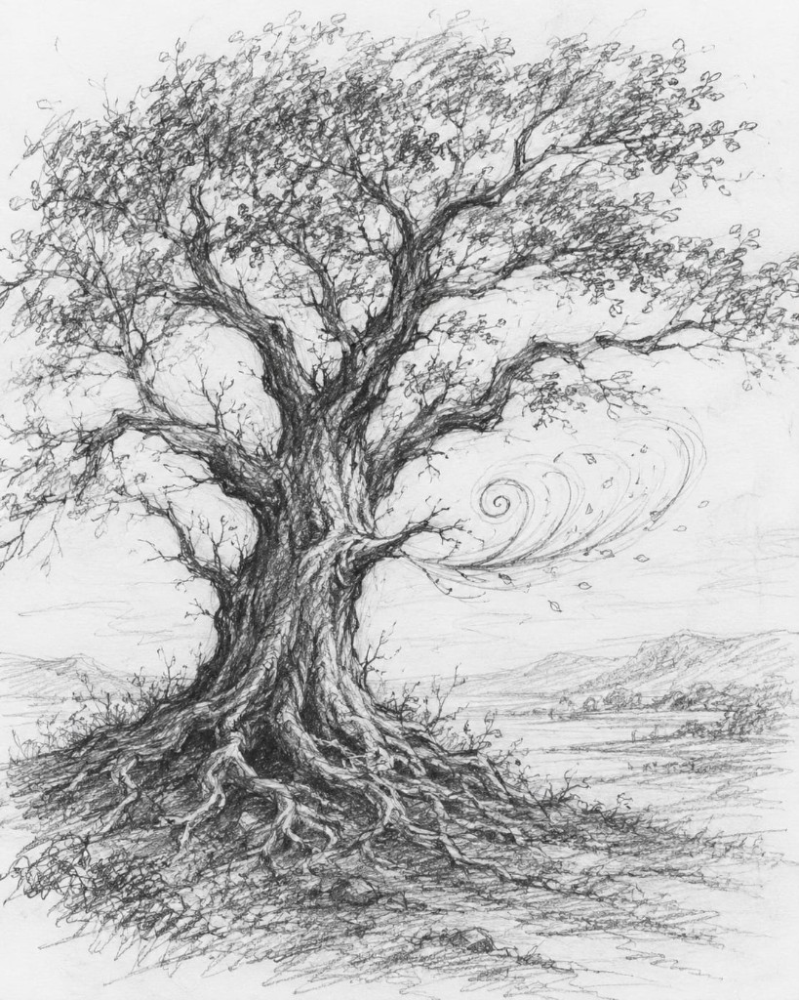

Havia uma árvore que não se limitava ao silêncio das outras.

Enquanto as demais apenas balançavam ao vento, resignadas ao destino de serem paisagem, ela respondia. Assobiava. Não como um som qualquer perdido no ar, mas como um chamado — fino, persistente, quase humano.
Ninguém soube dizer quando aquilo começou.
Alguns diziam que era o vento atravessando seus galhos tortos, moldados por anos de tempestades. Outros juravam que não — que havia intenção naquele som. Ritmo. Pausa. Como se a árvore respirasse… e, entre uma respiração e outra, falasse.
Os mais velhos evitavam passar por ela ao entardecer.
Diziam que quem parasse para escutar por tempo demais começava a ouvir mais do que deveria. Primeiro, o assobio. Depois, ecos. Fragmentos. Como se algo antigo, enterrado sob raízes profundas, tentasse se lembrar de si mesmo.
Mas havia aqueles que se aproximavam.
Não por coragem — mas por reconhecimento.
Porque, no fundo, todos carregam um ruído semelhante dentro de si. Um chamado baixo, quase imperceptível, que insiste em atravessar o silêncio da rotina. A árvore apenas tornava isso audível.
Ela não assobiava para o mundo.
Assobiava para quem ainda sabia escutar.
E talvez fosse esse o verdadeiro desconforto: não o som… mas o que ele despertava.